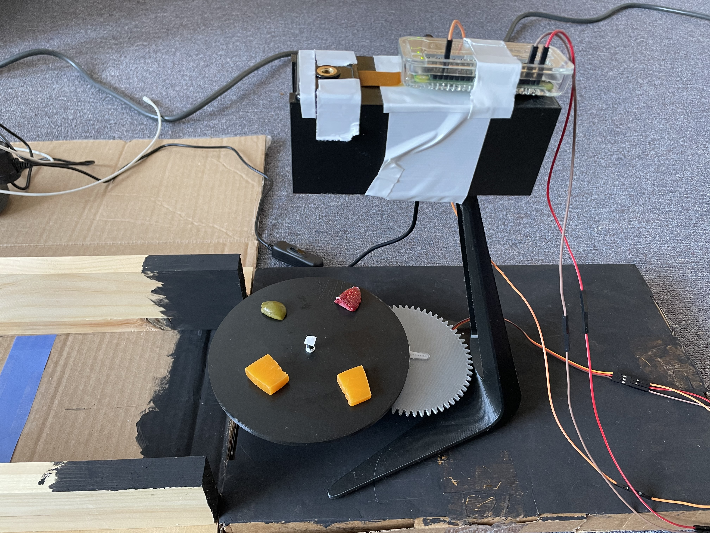
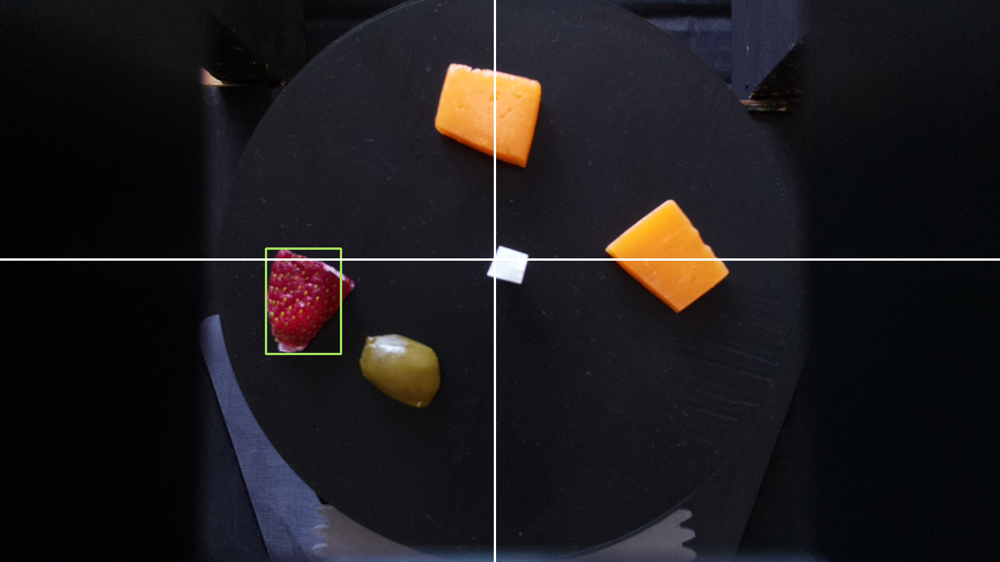
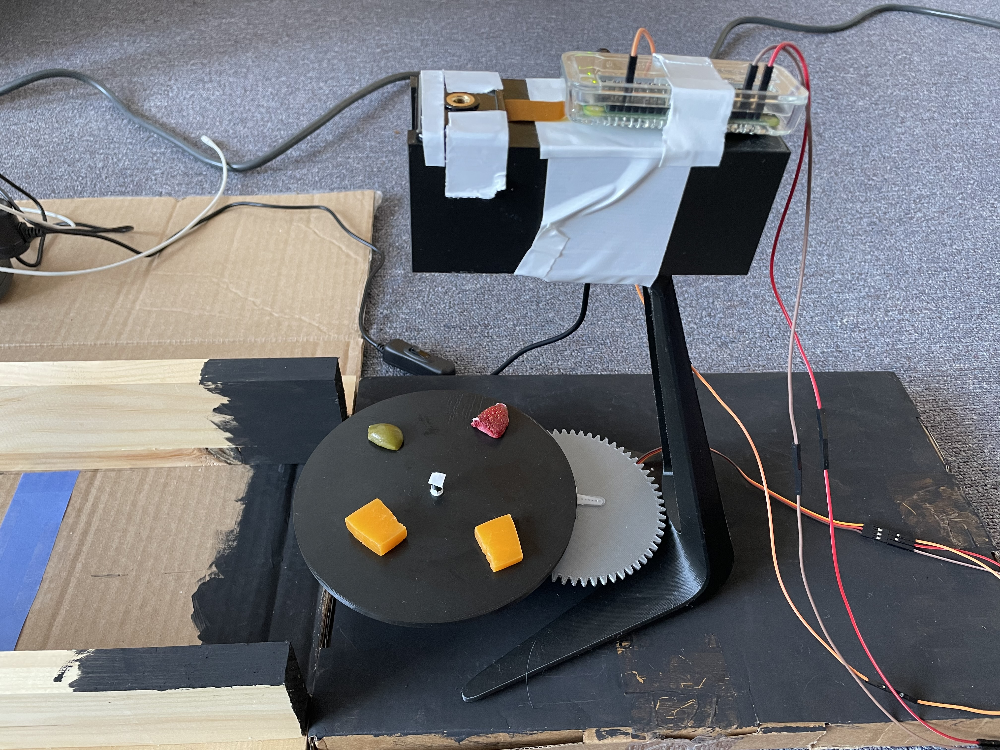
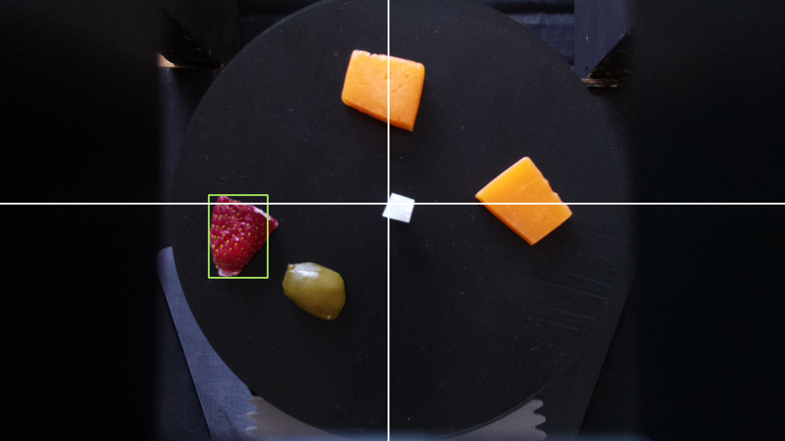

CharcuterPi
Our final project included a Raspberry Pi Camera above a charcuterie board, a Raspberry Pi Zero W that communicated with a Raspberry Pi 4 over WiFi , a servo motor, and OpenCV to identify the correct food and rotate the charcuterie board to the correct position. The robot was built using parts from the ECE 5725 class, a color sensor, and a robot arm consisting of two servo motors. The movement of the arm was determined by inverse kinematics.
 



Introduction
This project was done as a final project for the ECE 5725: Embedded Operating Systems class at Cornell University. For this project, Kristin Lee and I designed a system that has a robot retrieve food for a user. The following report is taken from our final project website, which was written by Kristin Lee and myself. We had three different food items placed on a rotating charcuterie board and a robot that could drive between the user and the board. The goal of this project was to have the robot retrieve the food without the need for the user to get up. We used a Raspberry Pi Camera mounted above the charcuterie board, a Raspberry Pi Zero W, a servo motor, and OpenCV to rotate the charcuterie board. The board was rotated such that the desired food item was aligned with the robot. The robot was built using the Lab 3 parts, a color sensor, and a robot arm consisting of two servo motors. The Raspberry Pi 4 and piTFT were mounted on the robot, so the user could choose which food item they wanted by pressing a button. The Raspberry Pi 4 and the Raspberry Pi Zero W communicated with each other over WiFi using the Python Socket library. The robot used the color sensor to determine when to stop (i.e. when it reached the user or the board). We used inverse kinematics to move the robot arm to pick up the food on the charcuterie board.
Project Website and Github
Design and Testing
Overall System Design
The overall design of the system was to have the user choose a food for the robot to pick up. The robot would then tell the charcuterie which food it wanted, and the board would spin to align that food along the axis parallel to the track. The robot would then drive over to the board and use the robot arm to pick up the food and bring it back to the user.
Charcuterie Board
Hardware Design
The hardware for the charcuterie board setup consisted of the Pi Camera, an SG90 servo motor, the Raspberry Pi Zero W, a 3D printed rotating board, and a 3D printed stand. The Pi Camera and Raspberry Pi Zero W were mounted on top of the 3D printed stand such that the camera was overlooking the board.
The rotating board consisted of two gears, the board itself, and a base with a space for the servo motor and an axle for the gears. Since the servo motor is only capable of spinning 180°, we designed the gears to be in a 2-1 ratio. This meant that the gear attached to the servo motor had twice as many teeth as the gear attached to the board. This would allow us to get a full 360° range of motion. The gear that was attached to the board sat on an axle that protruded from the base. When we printed the base, the axle was slightly too narrow, but this was fixed by simply wrapping some tape around the axle to increase its diameter. The servo motor was connected to the Raspberry Pi Zero W. It was connected to the 5V pin, ground, and GPIO19 on the Raspberry Pi Zero W. GPIO19 was used to control the PWM signal for the motor while the 5V pin and ground were used to power the servo.

The camera setup consisted of the Pi Camera, the Raspberry Pi Zero W, and a 3D printed stand. Both the Pi Camera and the Raspberry Pi Zero W were mounted on top of the stand using duct tape. The camera was positioned such that it overlooked the charcuterie board while the Raspberry Pi Zero W was simply mounted behind it. We had to mount the Raspberry Pi Zero W with the Pi Camera because the cable connecting the camera and the Pi was too short to have the Pi elsewhere.
Software Design
The software for the charcuterie board setup consisted of OpenCV, the piServoCtl library, and the Python socket library. We used OpenCV to distinguish between different food items. The piServoCtl library was used to control the servo motor that spun the board, and the Python socket library was used to communicate between both Raspberry Pis.
The Pi Camera took photos of the board while the program was running. We set the camera shutter speed to the exposure speed to make the images more consistent. In addition, we set the camera iso to 200 which is good for daytime lighting.
On the board, we had cheese, strawberries, and olives. Since each food item we had on the board was a different color, we used OpenCV to color mask based on the chosen food item. For example, if the user chose cheese, we would mask the color yellow on the image taken by the Pi Camera to find the cheese on the board.
The color masking was done in the getTargetAngle function in move.py. We defined upper and lower HSV bounds for each color we wanted to mask. For example, the red color thresholds were [165, 100, 90] to [179, 255, 255]. Then, we converted the image taken by the Pi Camera from RGB to HSV and applied the color mask by using the function cv2.inRange which took in an image and lower and upper color bounds and returned a black and white masked image.
After color masking the image, we applied a blur to the masked image to reduce any noise in the image. Then, we found the edges in the image by using the cv2.Canny function. Using these edges, we were able to find the contours in the image. Then, for each contour in the list of contours, we used the cv2.approxPolyDP function to approximate the contour shape to a polygon. This would help reduce unnecessary vertices in the contour. Next, we drew bounding rectangles over each contour. If the area of the rectangle was less than 625 pixels, it was discarded. This was to reduce error and noise that could have occured with the color masking. Using an area bound helped ensure that rectangles were only drawn around the desired food items since the area of the food items was greater than 625 pixels. For example, the strawberry seeds are yellow in color, so they get picked up when we mask the cheese. However, since the area of each seed is not greater than 625 pixels, they are not included. We maintained a list of rectangles where each rectangle represented one food object. This list was recreated every time a new image was taken and a new color mask was applied. For each rectangle that was appended to the list, we also found the minimum enclosing circle and added the center of the circle to another list. This was to determine where the center of the food item was. We returned the list of centers. All of the contour logic was done in the easyContours function in easyContours.py.
Once we had a list of centers, we chose one of the entries at random and calculated what angle the board needed to move to such that the food was aligned with the positive y-axis. We did so by calling the calculateAngle function in find.py. This function takes in the x distance between the center of the board and the center of the food, the y distance between the center of the board and the center of the food, as well as the current position of the board (i.e. the angle the servo motor is at multiplied by 2). It then checks which quadrant the food is in based on the x and y distances and uses math.atan to determine theta, which is the arctangent. The quadrants are determined by the axes drawn in the figure above.
Using theta, we find the target angle the servo needs to move to by calculating the difference between the current angle and theta plus any offset needed based on the determined quadrant. For example, if the food was in the third quadrant, the target angle was current angle - (180 + theta) because we needed to compensate for how many degrees off the negative x-axis was from the positive x-axis. This is because the arctangent returns the angle between the point and the axis corresponding to its quadrant. In other words, the first quadrant corresponds to the positive x-axis, the second quadrant corresponds to the negative y-axis, and so on. The offset for each axis is based off of the angle between it and the positive x-axis, so the negative y-axis has a 90° offset. In addition, if current angle < theta + offset, then target angle is 360 - (current angle - (theta + offset)). This is to ensure we do not return a negative angle.
After we find the target angle, we rotate the servo using a drive function. This function simply checks whether or not the current angle is less than or greater than the target angle and increments or decrements the current angle accordingly and moves the servo using the piServoCtl library. This library uses hardware PWM to rotate the motor. Specifically, we used the servo.write function. This function takes in an angle and moves the servo object to that angle. We slowly incremented the angle with 0.5 second delays between each increment to ensure the table moved smoothly and did not whip around too quickly. We also had to normalize the target angle because the servo motor seemed to spin slightly more than 180°. To account for this inaccuracy, we multiplied the target angle by 172/180 before moving the servo. The drive function returned the current angle of the servo motor after it was done moving. This was so that we could keep track of the position of the board.
The Python socket library was used to communicate between the two Raspberry Pis and is explained later.
Testing
We tested the charcuterie board functionality by running the program several times. We had several different Python scripts that each corresponded to different parts of the program. As a result, we were able to test different components separately before testing everything together. This also made it easier to debug because we could test different parts in isolation.
First, we tested the color masking. We did this by having the Pi Camera take an image and using OpenCV to mask the image and display the masked image. This helped us see how well the masking was working and whether or not we needed to adjust the boundaries. We used Paint to find the HSV values for the colors in the image. Since OpenCV and Paint have slightly different HSV ranges, we scaled them to fit the OpenCV ranges. This part was very finnicky, as different lighting conditions could affect the coloring in the images.
Once we had the basic color masking working, we tested driving the servo motor. We tested this by placing an object indicator on the board and having the board drive to a specified angle. Based on where the object indicator ended up, we could see how accurate the spinning was. This portion went very well, and we did not have any issues with the servo moving except for the fact that it seemed to spin slightly more than 180°, which was fixed by normalizing the angle.
Finally, we tested finding the target angle and moving to it. This part was the most time consuming because it involved integrating all of the previous parts, as well as testing new functionality. In order to test this, every time we modified the image or drew something on it, we displayed it. This way we could see what the program thought it should be doing at every step. We also printed out the quadrant, coordinates of the food, and the calculated target angle. We ran into several issues while testing this. Since we did not yet have the food we were going to use in the demo, we substituted with sponges. In addition, since we were testing at night, the lighting was too dark. As a result, we used a flashlight to add light; however, this introduced some inconsistencies with the lighting simply due to human error. Finally, we ran into issues when drawing the rectangles around the food objects since sometimes there was a lot of noise in the masked image. This was solved by adding a blur to the image and only drawing rectangles over contours with a large enough area.
Robot
Hardware Design
The hardware for the robot consisted of the Lab 3 robot parts, Raspberry Pi 4, piTFT, and a color sensor. The color sensor was used to detect when the robot should stop (i.e. it had reached the user or the charcuterie board).
The color sensor communicated with the Raspberry Pi 4 over I2C. It was connected to the 3.3V pin, ground, SDA, and SCL. The SDA and SCL pins were GPIO2 and GPIO3, respectively.
The DC motors were set up in the same way they were for Lab 3. The left motor was connected to GPIO5 and GPIO6, and it used GPIO12 as its PWM pin. The right motor was connected to GPIO26 and GPIO19. GPIO21 was used for PWM. The duty cycle for both motors was 100 at 50 Hz frequency. We had to run the motors at the maximum duty cycle because the motors would not spin at lower duty cycles.
The robot frame was assembled in the same way it was for Lab 3. The piTFT screen was attached to the Raspberry Pi 4 in order to display the GUI.
Software Design
The software for the robot setup consisted of the pygame, RPi.GPIO, the color sensor logic, and the Python socket library. we used pygame to create the GUI for the piTFT. The RPi.GPIO library was used to setup the physical buttons on the piTFT screen and to control the DC motors. The color sensor returned the RGB value of the color directly beneath the robot. This was used in our drive logic. The Python socket library was used to communicate between both Raspberry Pis.
We used pygame to create the GUI that would be displayed to the user on the piTFT screen. The GUI displayed the available food choices on the charcuterie board, as well as an option to exit the program. Initially, we wanted to use touchscreen buttons, so the user could tap on the screen to choose a food item. However, we ran into issues with the touchscreen where the coordinates of the presses were very random. This resulted in lots of error when trying to choose an item, as the piTFT would not recognize the correct coordinates. This meant that whenever you pressed the screen, you would essentially be choosing a random food item. As a result, we switched to using the physical buttons on the piTFT screen instead. We displayed text on the screen next to each of the buttons to show the user what food item each of the buttons corresponded to. We used callback functions to perform the logic for each button.
If a food item was no longer available on the charcuterie board, it would no longer be displayed on the GUI, and pressing the button would not do anything. This was to prevent the user from trying to get a food that did not exist on the board.
For the motors, a drive function was made that took in direction as a parameter. There were three possible directions: forward, backward, and stop. If the motor should drive forwards, pins 6 and 19 were set high, and pins 5 and 26 were set low. If the motor should drive backward, the pins were flipped from the forward commands. To stop the motors, all of these outputs were set to low. Pins 12 and 21 were used for PWM and were not included in this drive function. Instead, this was set to a constant duty cycle of 100% outside of the drive function, as mentioned before.
The color sensor was used to determine when the robot should stop. When the color sensor saw the color blue, it would tell the robot to stop. The color sensor used the adafruit_tcs34725 and board libraries. We used the function sensor.color_rgb_bytes to return the RGB value of the color in front of the color sensor. Using this value, we checked if it was within a range of blue shades. If it was, the robot stopped; otherwise, the robot would continue moving.
Initially, we also wanted to use the color sensor to keep the robot on course. We would do so by having colored lines on either side of the sensor. For example, there would be a red line on the left and a green line on the right. If the color sensor saw the color red, it would tell the robot to turn right. If the color sensor saw the color green, it would tell the robot to turn left. However, after attempting this, we determined that it was not feasible given the mechanical and timing constraints. Since the DC motors are not very accurate nor precise when moving, it was not feasible to have the robot turn accurately based on the feedback from the color sensor. In addition, since the robot needed to be facing the charcuterie board directly, we needed to be able to determine which way the robot was facing. Since we did not have a way of determining this, we needed a different method of ensuring the robot was lined up with the charcuterie board as precisely as possible. As a result, we decided to use wood and cardboard to build a track for the robot to follow. This would ensure that the robot would reach the charcuterie board facing the right way. We still used the color sensor to determing whether or not the robot should stop by placing a blue line on either end of the track.

The Python socket library was used to communicate between the two Raspberry Pis and is explained later.
Testing
Testing the robot was done in stages. Since we knew that the drive capabilities worked from Lab 3, we did not need to test whether the robot was able to drive. For the color sensor, we first looked at how good it was at detecting colors. We found that while it detected color quickly and accurately, the sensor had a very small range, leading to a 3D printed box that would keep the sensor around half a centimeter away from the ground. After this was attached to the bottom of the robot (as seen in figure 15), we created a path for the robot with colored lines. A program was made to test whether the robot was able to react correctly to the detected colors. However, as mentioned earlier, using the colored sensors to keep the robot moving on course did not work well. To determine what was happening, we printed out the detected colors onto the console. We saw that while the sensor would detect the colors correctly while driving, the motors would not turn accurately, leading to the robot sometimes driving off the track. Additionally, the robot would sometimes move so quickly that it would overshoot the colored lines. At first, we experimented with the speed of the motors to see whether slower speeds would provide more accuracy, but the motors on the robot did not have enough torque to move the robot at smaller speeds. Thus, the track in figure 18 was used instead.
With the track, we once again tested the driving capabilities of the robot with the color sensor. While driving, the robot would sometimes get stuck on the sides of the track. This was just due to friction between the sides of the robot and the track, and simply nudging the robot was usually enough for it to continue driving. A small cardboard bumper was added on the back of the robot, since it would get stuck more while driving backwards than forwards. This helped improve the smoohness of the driving. Because of all of the friction, the robot moved much slower than it had before, even when the motors were set to full speed. We found that the robot almost never overshot the blue lines at the ends of the tracks and consistently stopped correctly. Functionality was added for the robot to able to drive back and forth between the two lines. While there were some initial issues with the robot trying to move in the wrong direction at a bllue line or getting stuck at those lines, we added logic to ensure that the robot would not try to detect color until after the robot had moved off of the blue line.
The final stage was testing the GUI in conjunction with everything else. As mentioned before, the touchscreen would not register the touches at the correct coordinates, causing the food selection to be more like a game of roulette. While attempting to solve this issue, we first used collidepoint() to detect which button had beeen pressed. When this did not work, we then switched to manually checking whether the position of the touch was within a certain x and y bound. When this still failed, we then reran the code from Lab 2 that displayed the coordinates of the button presses. Since we knew that the Lab 2 code worked, there was no doubt that the touchscreen was not behaving as expected and giving us random coordinates. The phsyical buttons worked as expected and the robot was able able to register the selection, drive to the charcuterie board and stop a set distance away from it, and drive ack to the user before stopping at the blue line there, as needed.
Robot Arm
Hardware Design
The arm that we used was the MeArm Robot Arm v1.0. Although the base servo was included in the build of the arm, that was only for structural reasons; the servo was not used to move anything in the arm. Additionally, the claw was replaced by the toothpick holder. The entire arm was placed on the top of the 3D printed shelf on the robot.
The servo connections are shown below. The signals from GPIO pins 12 and 13 were shifted to battery voltage before going to the servos. The servos are powered by the battery.
Software Design
Since we were able to determine the position of the arm from the camera, we wanted to be able to move the arm to stab the food at that point. Thus, we had to use inverse kinematics to move the arm. Client calls the arm function, which is given the distance from the center of the charcuterie table to the center of the food in pixels. The arm function also takes in the left and right servo objects. Since we only used two servos, the arm only moved in one plane. The arm code converted the pixel distance to distance in centimeters from the base of the arm. The setup of the arm is below. There is a bicep and forearm, and each section is approximately 8 cm long. Each servo ranged from approximately 0° to 90°.
First, we had to determine the angles of A and B from the given x and y. To do this, we used the Pythagorean theorem, law of cosines, and general trigonometry to find angles A, B, and D. This then had to be translated into servo angles. The servo angles were both measured relative to the vertical axis at their respective joints, as pictured below. To avoid too much fiddling with signs, the angle D was always positive and an if statement determined what angle the servos should move to, depending on whether y was positive or negative. After further trigonometry, the servo angles were calculated and given bounds to avoid breaking either the arm or the servos. All of these calculations were done in the function calculate_angles, which took in x and y in centimeters as parameters and returned the servo angles.
After the calculations were done, the arm function then called on the move_arm function which took in the new servo angles as well as the last servo angles. This function moved the arm from its old position to its new position. Like the charcuterie table, this was done by incrementing the servo angle slowly, with a 0.05 second delay for the forearm and no delay for the bicep. The servos were moved through hardware PWM. When this was done, the function returned the current servo angles.
In the main arm function, the arm went through 5 different states: the home position, hover position, stab position, hover position, and finally back to home position. As the robot moved to each of these positions, calculate_angles and move_arm were called each time. A 2 second delay occurred between each movement. The home position was set to a position high enough for the arm to keep from hitting the charcuterie board when it drove up to it. The x position of the hover and stab positions were determined by the conversion from the pixel distance, while the y position was hardcoded in: 3 cm for hover, and -1 cm for stab.
Testing
The very first phase of testing involved simply testing the servos in the arm to check the range. A test program increased and decrased the servo angle. This was run individually on each servo. When running a single servo, there were no complications, but running two servos caused issues initially. This was partly due to the arm servos being connected to the same hardware PWM module. However, after this connections was changed, there were still issues with jitter. However, we proceeded with the testing.
MATLAB code was created to test the equations. The arm position was displayed and all of the angles were printed out to help with debugging.
After the MATLAB code worked, we then implemented it on the arm. This took several iterations to get the equations exactly right. When it did work, the arm proceeded to go to the correct position, but the amount of jitter would shake the arm so much that the arm would actual break after a while. We tried multiple different methods of setting the servo position and checked the signals on the oscilloscope to see if the PWM looked bad. In the end, we discovered that the jitter was due to the PWM signals being directly connected to the arm from the Pi. This was a problem because the Pi outputted 3.3V and the arm ran on 6V. By using the level shifter, this problem was avoided and the arm ran mostly smoothly.
To test whether the arm could actually pick up food, we put food items directly in front of the robot and manually gave the arm positions. We found that while the arm had no trouble going low enough to pick up the food, the toothpick was not sharp enough to pierce the food items. Even in the cheese, the easiest item to pick up, the toothpick would only make a dent in the top. To aid the toothpick, we taped a needle to the toothpick. This way, the needle would pierce the food and the toothpick would provide enough friction to keep the food from falling off. We were able to sucessfully stab all of the food items in this way.
After the whole system was working, some small calibration had to be done to the arm calculations to ensure that the position the arm went to was correct. This was done by subracting a small amount from the x position given to the calculate_angles function.
Communication
Communication between the Raspberry Pi 4 and the Raspberry Pi Zero W was handled with the Python socket library. The two Raspberry Pis communicated over WiFi. The Raspberry Pi Zero W acted as the server, and the Raspberry Pi 4 acted as the client. Below is a diagram of how the two Raspberry Pis communicated with each other.
Since the Rapsberry Pi 4 was the client and the Raspberry Pi Zero W was the server, the Raspberry Pi Zero W had to wait to receive a message from the Raspberry Pi 4 before it could send a response. We set it up this way because the Raspberry Pi 4 needed to initiate the communication, so it could not act as the server.
Results and Conclusions
In the end, we were successfully able to implement almost all of the functionality of the charcutrie robot. The user was able to input their desired food selection and the robot was able to locate the food item and stab it. Overall, the color and food detection were the most consistent. The robot repeatedly stopped in the same location over the blue lines and the charcuterie board consistently spun to align the correct food item with the robot. With the camera, the only variation was lighting, which was easily taken care of by changing the camera settings.
Our main problems came from mechanical errors. The motors for driving the robot were not accurate enough, causing us to have to use physical tracks to keep the robot in a straight line. The arm did not have enough torque to properly stab some of the food items, and it also had a tendency to drift left or right of the food because of the base servo. Because of this, sometimes the robot arm was not properly aligned with the food and would miss slightly. Additionally, the toothpick was not strong enough to keep the food on the toothpick, causing the food to fall off while the robot was driving to the user. All of these problems were due simply to mechanical variations that our current setup could not account for.
Future Work
If we had more time to work on the project, we would have definitely explored ways to make the robot arm more powerful and stable. For example, we would have tried using more powerful motors to generate more torque. In addition, we would have liked to try to have the charcuterie board adjust to the robot arm's position as it was trying to pick up the food to try to reduce the chances of missing. Additionally, using a linear drive mechanism such as stepper motors or a linear actuator would have been much more accurate than using inverse kinematics on the robot arm. We would also have used higher quality motors that would have allowed for more accurate driving.